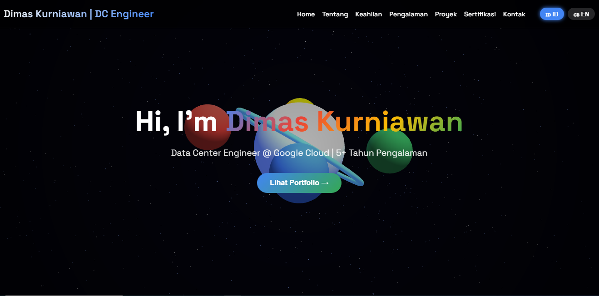
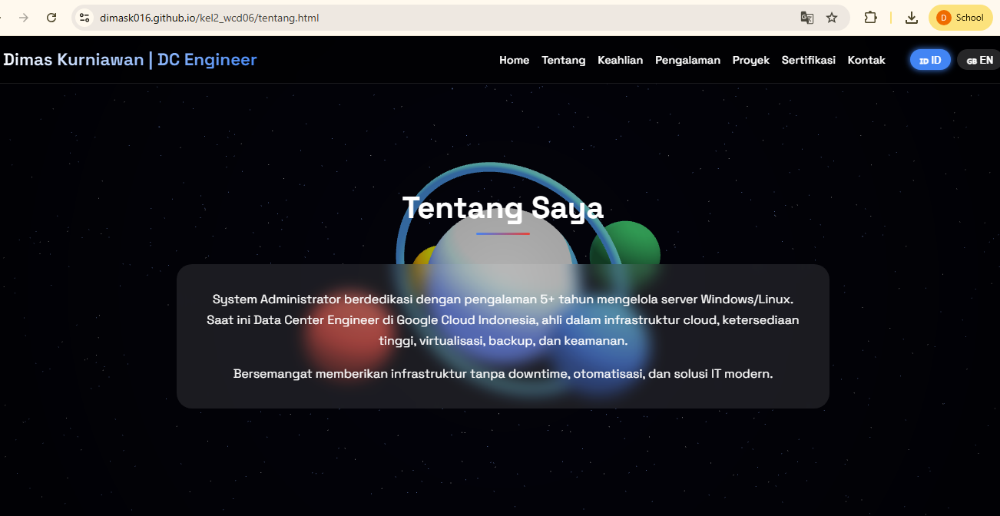
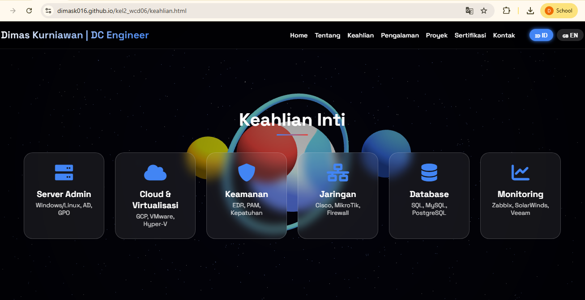
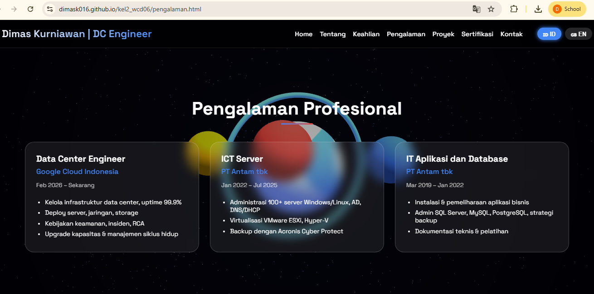
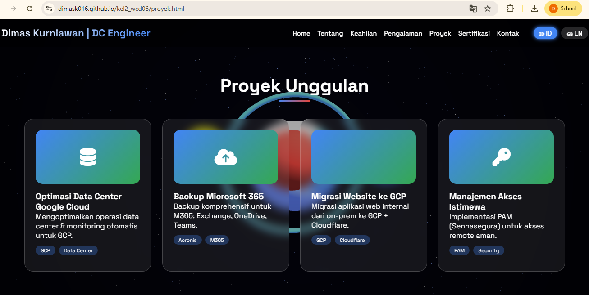
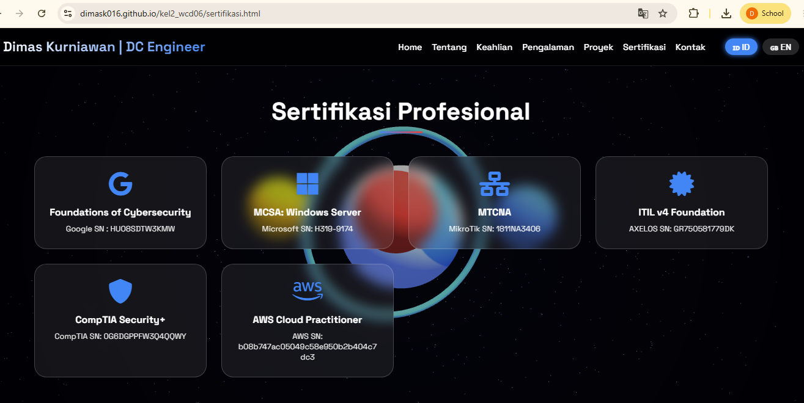
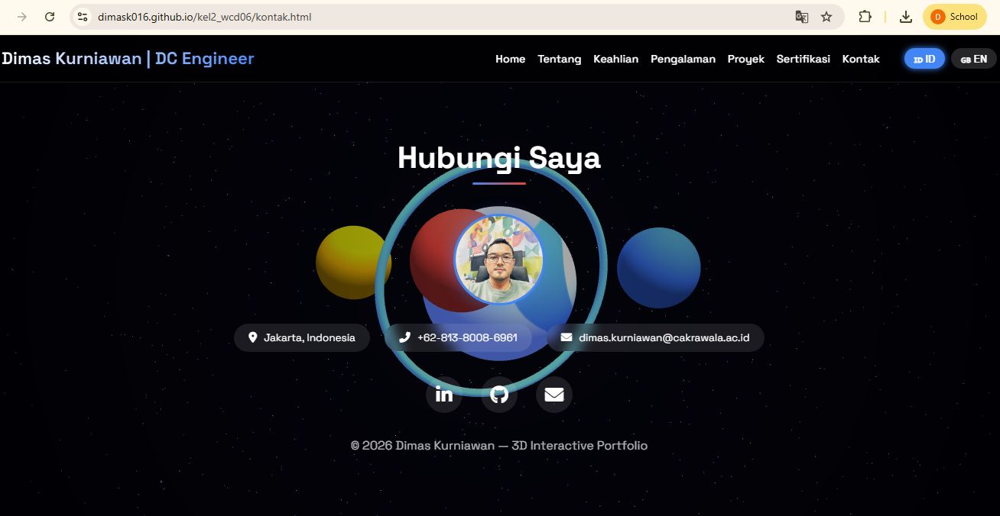

UNIVERSITAS CAKRAWALA
🚀 Web CV Portofolio Interaktif
Kelompok 2 – Web Client Development (WCD06) | Teknologi Informasi
Dosen Pengajar: Reza Fahmi Alviandy | 2026
Halaman Judul
🚀 Web CV Portofolio Interaktif
Portfolio 3D dengan dukungan dua bahasa (ID/EN) dan latar belakang Three.js
Kelompok 2 – WCD06
Deva Agriani (Ketua)
Gempur Mahya Reksa
Fajar Muhammad Ramadhan
Dimas Kurniawan
Dharma Satriadi
Web Client Development - 2026
Live Demo: Web CV Portofolio Interaktif
Konsep & Teknologi
Deskripsi Proyek
Website portofolio personal yang menampilkan profil, keahlian, pengalaman, proyek, sertifikasi, dan kontak dari profesional IT. Dilengkapi latar 3D interaktif (Three.js), responsif, dan mendukung pergantian bahasa (Indonesia/Inggris) secara dinamis.
Teknologi yang Digunakan
Struktur file: 7 halaman HTML (home, tentang, keahlian, pengalaman, proyek, sertifikasi, kontak) dengan sistem terjemahan terintegrasi.







Kelayakan UI/UX
Kelebihan UI/UX
- Navigasi konsisten: Fixed navbar di semua halaman, memudahkan akses.
- Responsif: Menggunakan clamp(), media query ≤768px, tampilan rapi di HP & desktop.
- Background 3D interaktif: Gerakan mengikuti kursor dengan overlay gelap menjaga readability.
- Glassmorphism & hover: Kartu dengan blur, border, efek naik saat hover.
- Salin kontak satu klik: Klik alamat/telepon/email → copy ke clipboard.
- Dukungan dua bahasa (ID/EN): Pilihan tersimpan di localStorage.
Saran perbaikan minor
- Optimasi loading Three.js untuk perangkat lama (fallback warna).
- Menambahkan aria-label pada tombol interaktif untuk aksesibilitas.
Kesiapan Infrastruktur
✅ Repository GitHub terstruktur rapi
- 7 file HTML utama dan dokumentasi lengkap (README.md).
- Deployed dengan GitHub Pages: Web CV portofolio
- Workflow Git: clone → pull → add → commit → push, dilengkapi langkah mitigasi konflik.
- Setiap halaman menggunakan Three.js yang sama dan sistem translasi terintegrasi.
| Komponen | Implementasi |
|---|---|
| Version Control | Git dengan branch main & dokumentasi kolaborasi |
| Hosting | GitHub Pages (auto deploy dari branch main) |
| Dokumentasi | README.md lengkap dengan screenshot, cara clone, tautan demo |
Komunikasi & Presentasi
alur aplikasi:
Menu tetap (Home, Tentang, Keahlian, Pengalaman, Proyek, Sertifikasi, Kontak) memudahkan eksplorasi.
Bola orbit berwarna merepresentasikan stabilitas & konektivitas, gerakan mengikuti kursor.
ID/EN toggle, copy nomor telepon/email langsung, tombol sosial media.
Menu collapse di HP, kartu adaptif, tetap nyaman diakses semua perangkat.
💡 Client pitch: "Portfolio interaktif yang mencerminkan profesionalisme di bidang IT, mudah di-maintenance, background Three.js dapat diganti tanpa merusak struktur konten."
Fitur Unggulan
Bola warna, partikel, bintang, parallax effect.
ID/EN, disimpan di localStorage, apply ke semua halaman.
Klik keahlian/proyek → alert info detail.
Klik email/telepon langsung tersalin.
Kartu modern dengan efek floating.
Media query, clamp(), flex-wrap.
/screenshots dengan preview setiap halaman (home, tentang, keahlian, pengalaman, proyek, sertifikasi, kontak).
Tautan & Live Demo
Wireframe Interaktif (Figma)
Klik dan scroll pada iframe untuk melihat desain wireframe lengkap.
Menjalankan Lokal & Git Flow
💻 Prasyarat & Clone
- Pastikan Git terinstall dan browser modern.
git clone https://github.com/dimask016/kel2_wcd06.gitcd kel2_wcd06- Buka
home.htmldengan Live Server atau double-click.
🔄 Git Workflow Tim
git pull origin main→ ambil perubahan terbarugit add .→ staginggit commit -m "deskripsi perubahan"git push origin main→ upload ke GitHub
Kesimpulan & Rekomendasi
📌 Rekomendasi Pengembangan Lanjutan
- Lazy loading untuk Three.js agar performa lebih baik di perangkat rendah.
- Tambah modal detail proyek (mengganti alert).
- Implementasi aksesibilitas penuh (role, aria-label).
- Integrasi form kontak dengan layanan email (Formspree atau backend sederhana).
Proyek ini merupakan solusi portofolio profesional yang mencerminkan keahlian dalam Web Client Development & Infrastruktur IT.
Terima kasih – Web CV Portofolio Interaktif siap digunakan!
📧 Kontak tim: dimas.kurniawan@cakrwala.ac.id | dimask016/kel2_wcd06